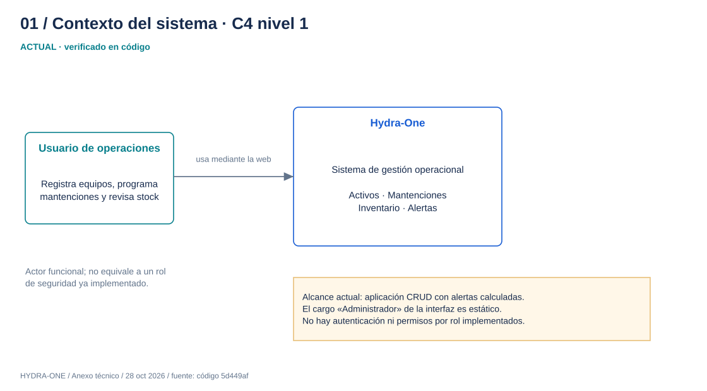
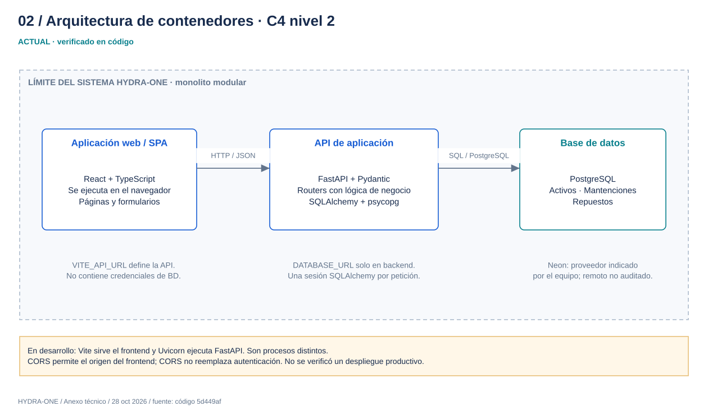
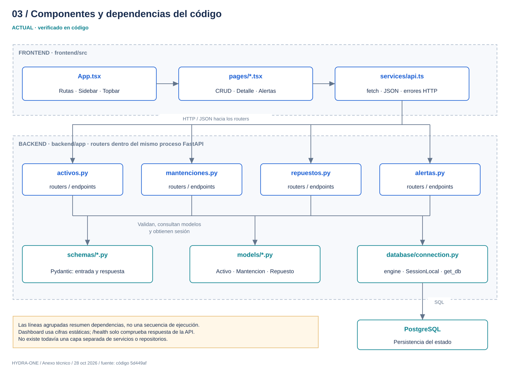
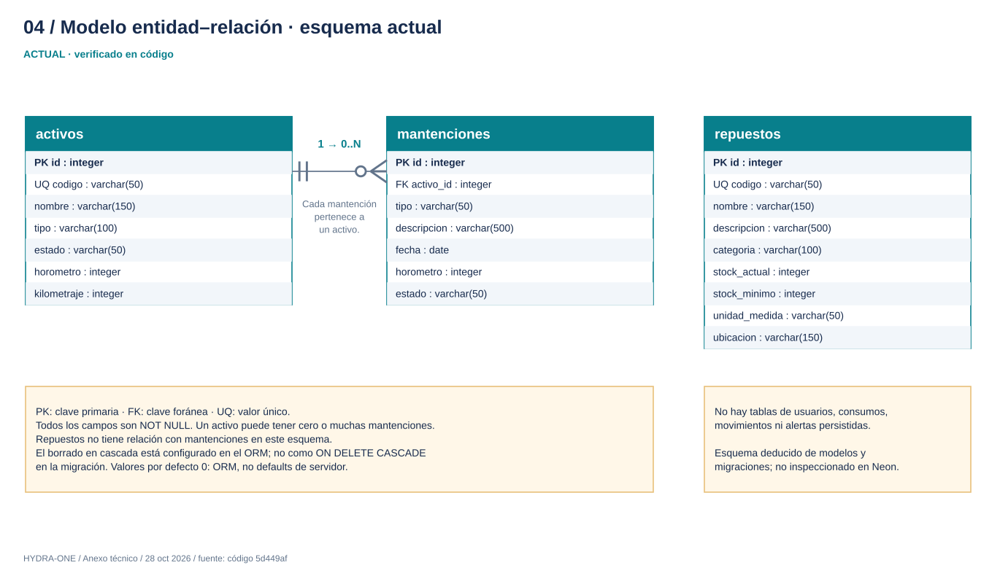
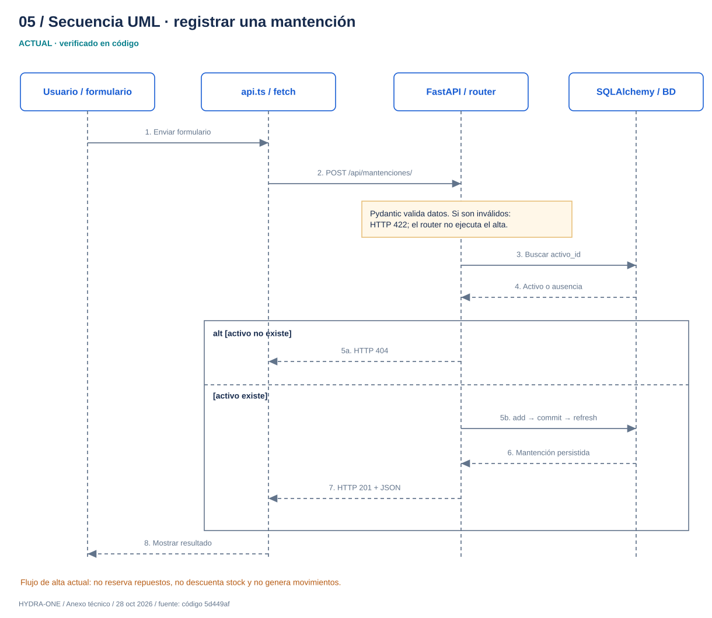
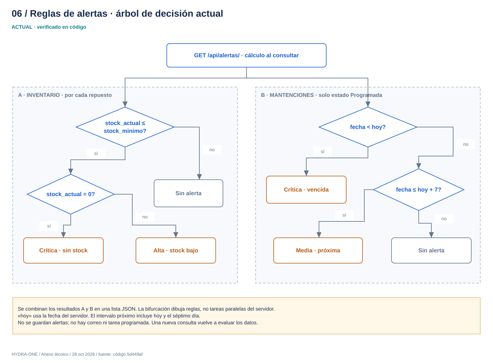
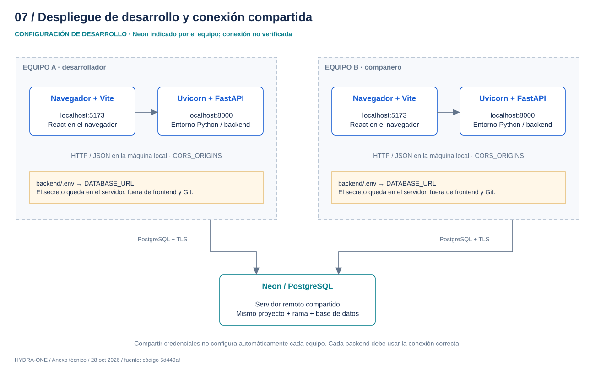
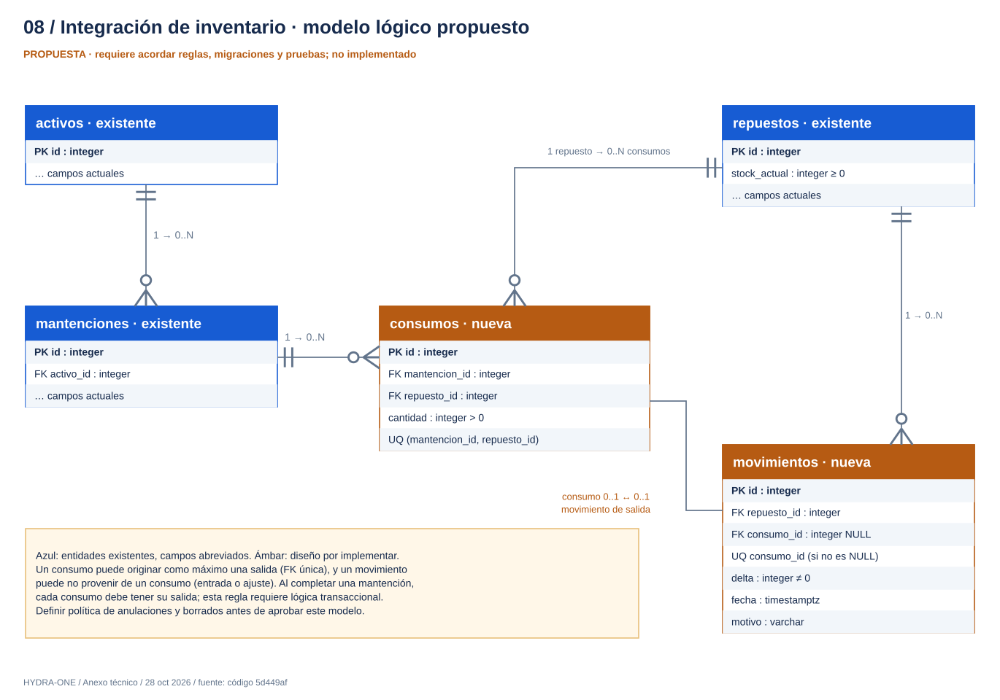
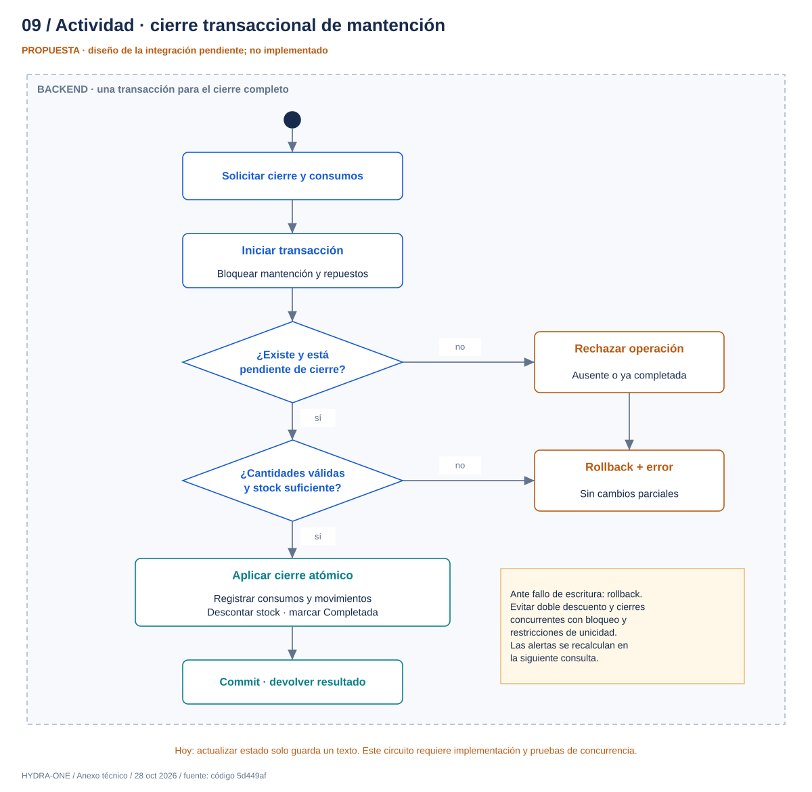

01 / Contexto del sistema · C4 nivel 1
ACTUAL · verificado en código

02 / Arquitectura de contenedores · C4 nivel 2
ACTUAL · verificado en código

03 / Componentes y dependencias del código
ACTUAL · verificado en código

04 / Modelo entidad–relación · esquema actual
ACTUAL · verificado en código

05 / Secuencia UML · registrar una mantención
ACTUAL · verificado en código

06 / Reglas de alertas · árbol de decisión actual
ACTUAL · verificado en código

07 / Despliegue de desarrollo y conexión compartida
CONFIGURACIÓN DE DESARROLLO · Neon indicado por el equipo; conexión no verificada

08 / Integración de inventario · modelo lógico propuesto
PROPUESTA · requiere acordar reglas, migraciones y pruebas; no implementado

09 / Actividad · cierre transaccional de mantención
PROPUESTA · diseño de la integración pendiente; no implementado
